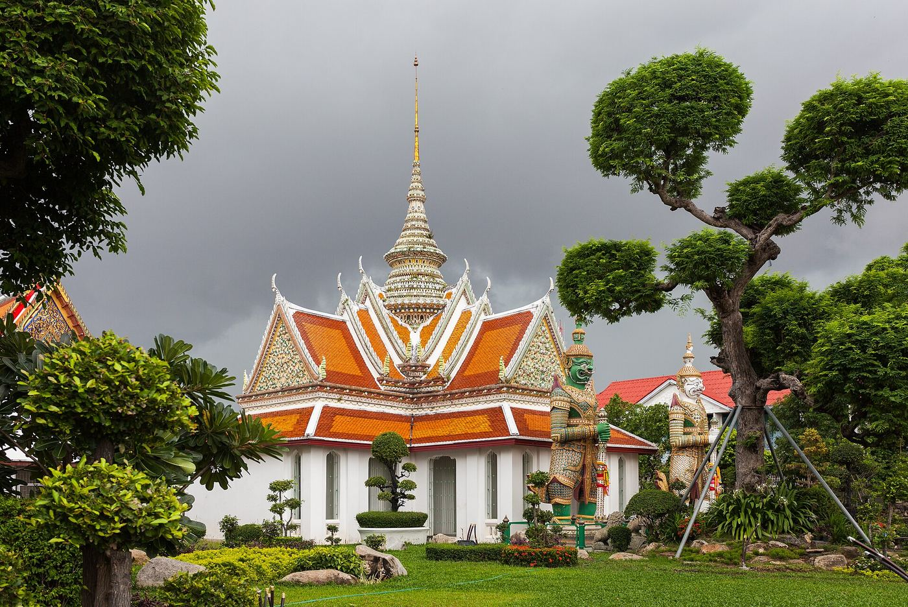
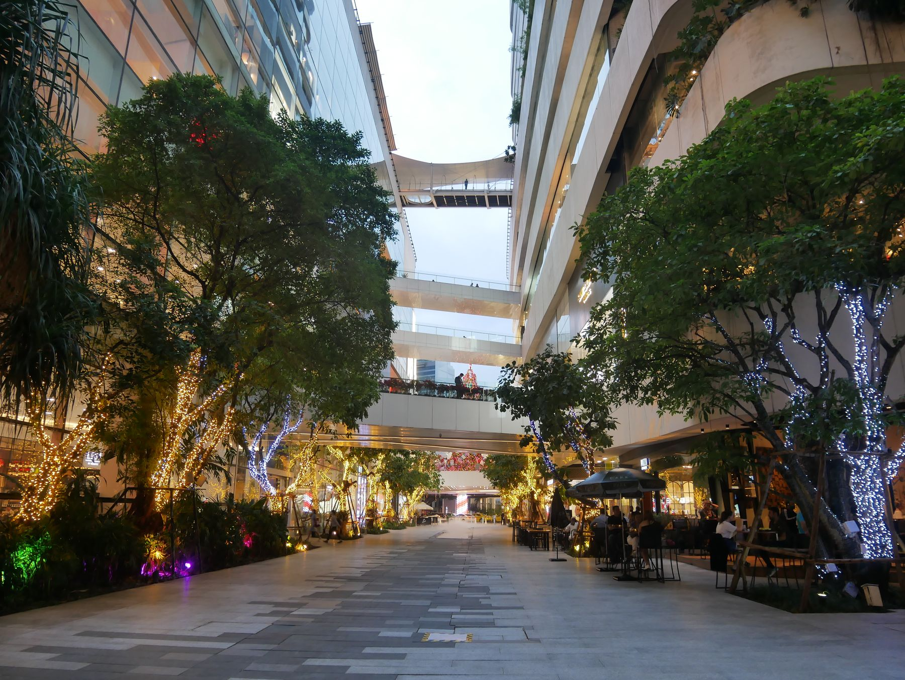
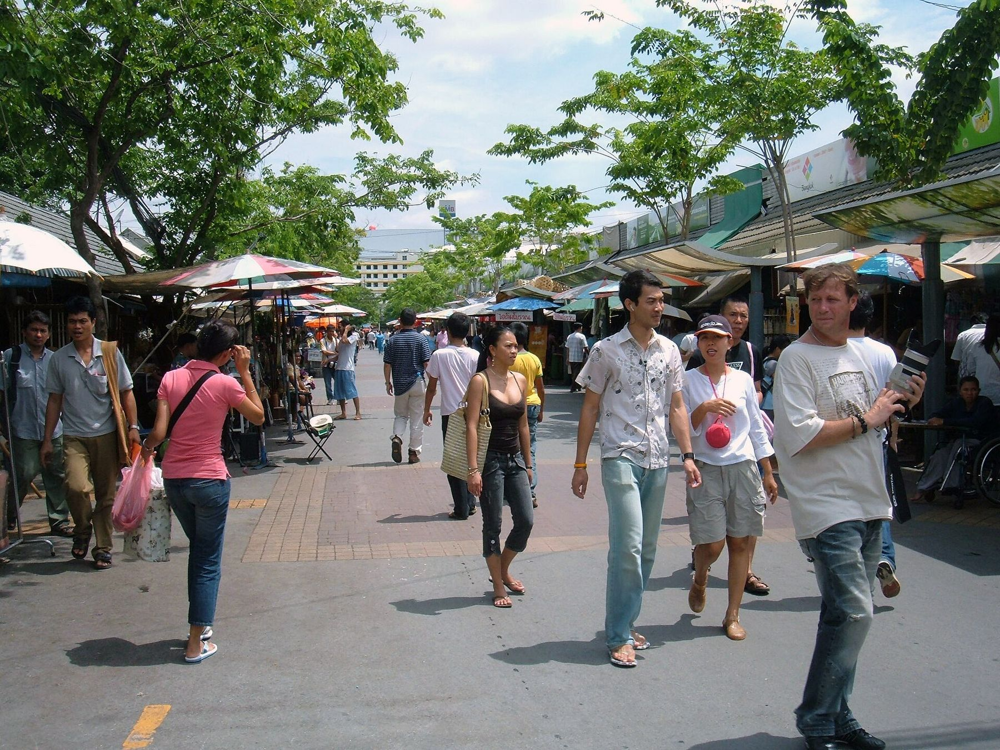
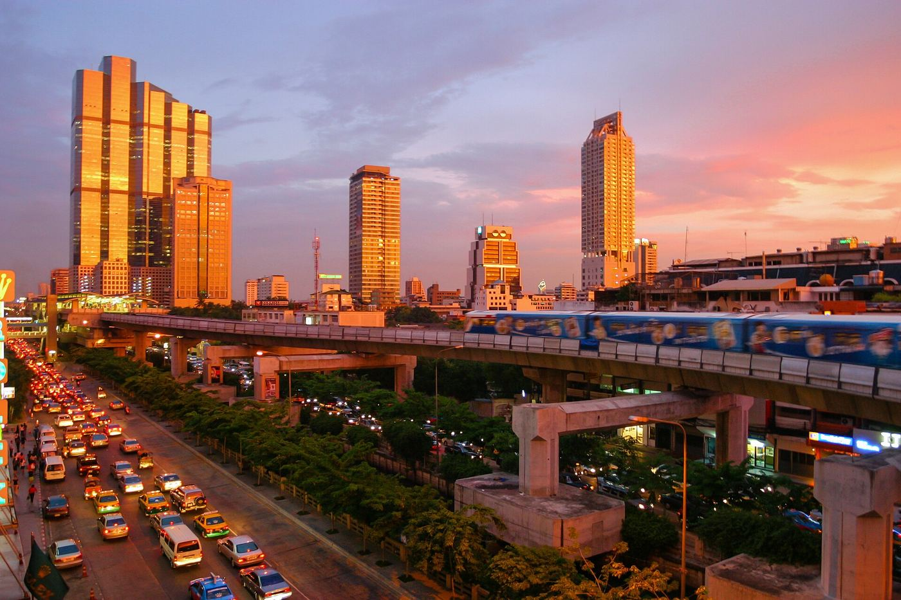

不趕景點
每天只有一條主軸，沒興趣可立刻縮短。

第一次去泰國，不用追經典清單。用 BTS、MRT 與河船串起好吃、好拍、每天一次 90 分鐘按摩，下雨就轉進咖啡廳與商場。
所有動線都經過「雨季、不愛久逛、不想塞在車上」的過濾，不用為了打卡破壞放鬆感。
每天只有一條主軸，沒興趣可立刻縮短。
BTS、MRT、ARL 與河船，避開曼谷路面塞車。
90 分鐘精油按摩不是備案，是行程主角。
戶外景點都有同區域的冷氣替代方案。
這是依方位繪製的行程示意圖，不依賴容易載入失敗的線上圖磚。點 D1–D4 看當天方向；右側每一站都各自連到唯一的 Google Maps 地點。
← 手機可左右滑動看完整方位；右側卡片是可直接導航的精確地點 →
時間預留了迷路、降雨與休息，不需要將每一格當成考試。點景點名稱直接通往對應的 Google Maps 結果。

早上從南勢角搭軌道前往桃園機場；到曼谷後不叫 Grab，ARL 接 BTS 直達飯店。傍晚只逛 EmDistrict、吃第一頓泰菜，最後用飯店旁 90 分鐘精油按摩收尾。

用一碗豬肉湯麵開始，恰圖恰只拿最精華的 75–90 分鐘，中午到 Or Tor Kor 吃水果與熟食。下午回飯店區域熱精油按摩，剛好趕上 AIRE 的落日 Happy Hour。
上午用軌道去 Wat Arun，好天氣才把雙人泰服當彩蛋。中午搭河船到 ICONSIAM 避熱，傍晚過河散步 Talat Noi 與 Yaowarat，最後在 Hua Lamphong 旁按摩。

早上只排飯店附近的早午餐，09:30 前完整打包。ThaiThai 開門就按 90 分鐘，回飯店準時退房，吃完輕午餐就 BTS 接 ARL 去機場。
照片不只是裝飾：每張都標出這是哪裡。點擊後可放大並開啟原始圖片來源；店家室內無合適授權圖片時，不用假照片冒充。
預約與預算將「必要」和「可有可無」分開。所有價格都要在 2026/9 出發前以店家實際回覆重新確認。
該預約的先預約；在飯店旁的 ThaiThai 抵達後再約，保留彈性。
以 1 THB 約當 NT$1 保守觀念編列，不含購物與臨時泰服攝影。
落地目標 NT$15,000–20,000；目前已接近上限。泰服、大額購物、高空酒吧追加第二輪不在此金額內。
勾選結果只儲存在這台裝置，重新開網頁仍會保留。
只連到單一官方結果，不丟給你一長串搜尋選項。